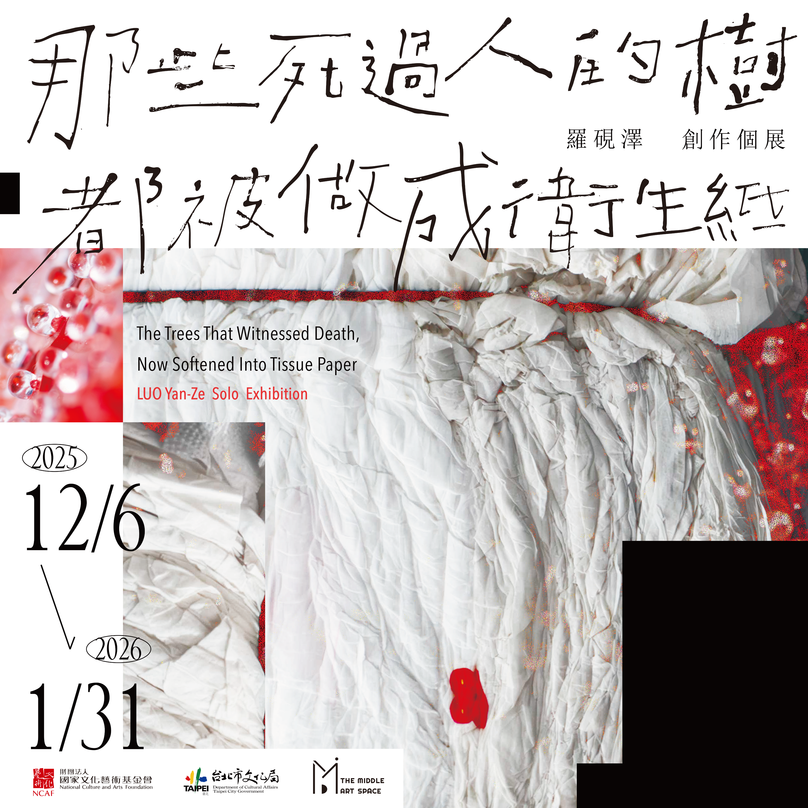
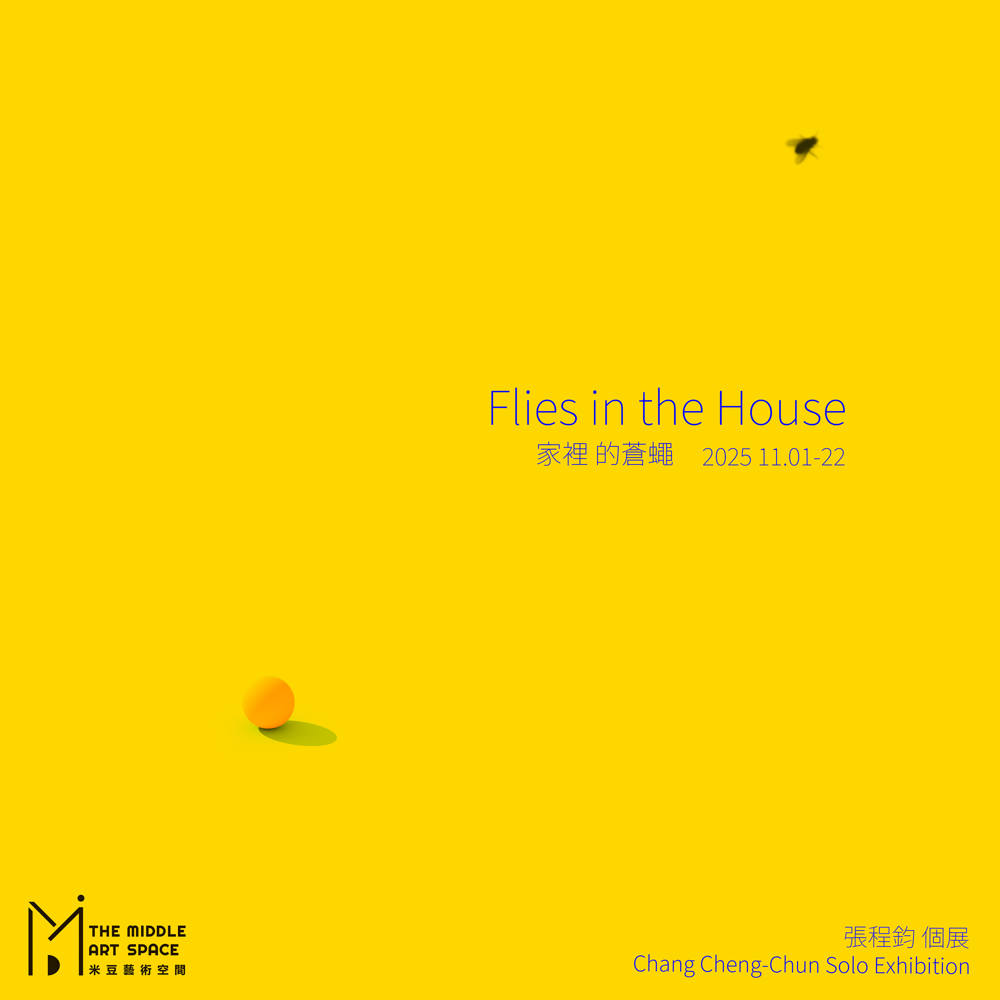
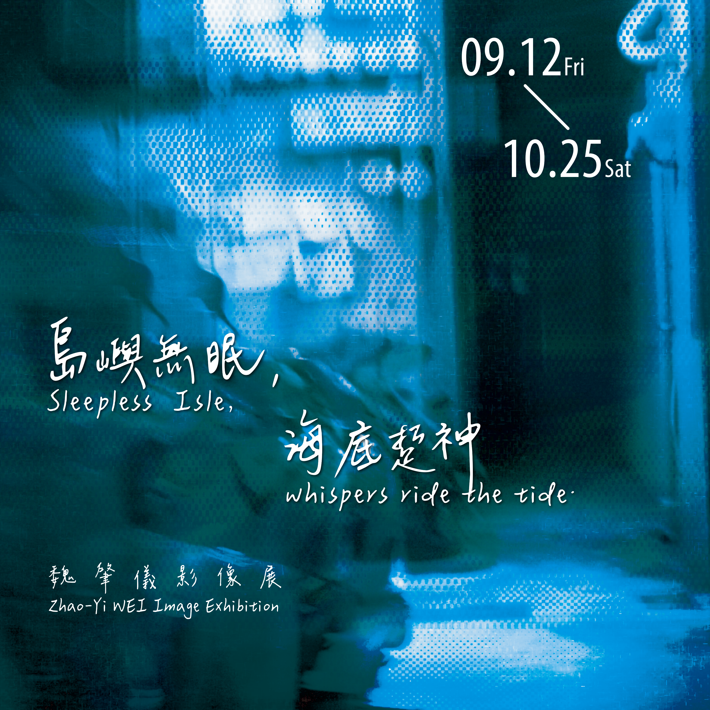
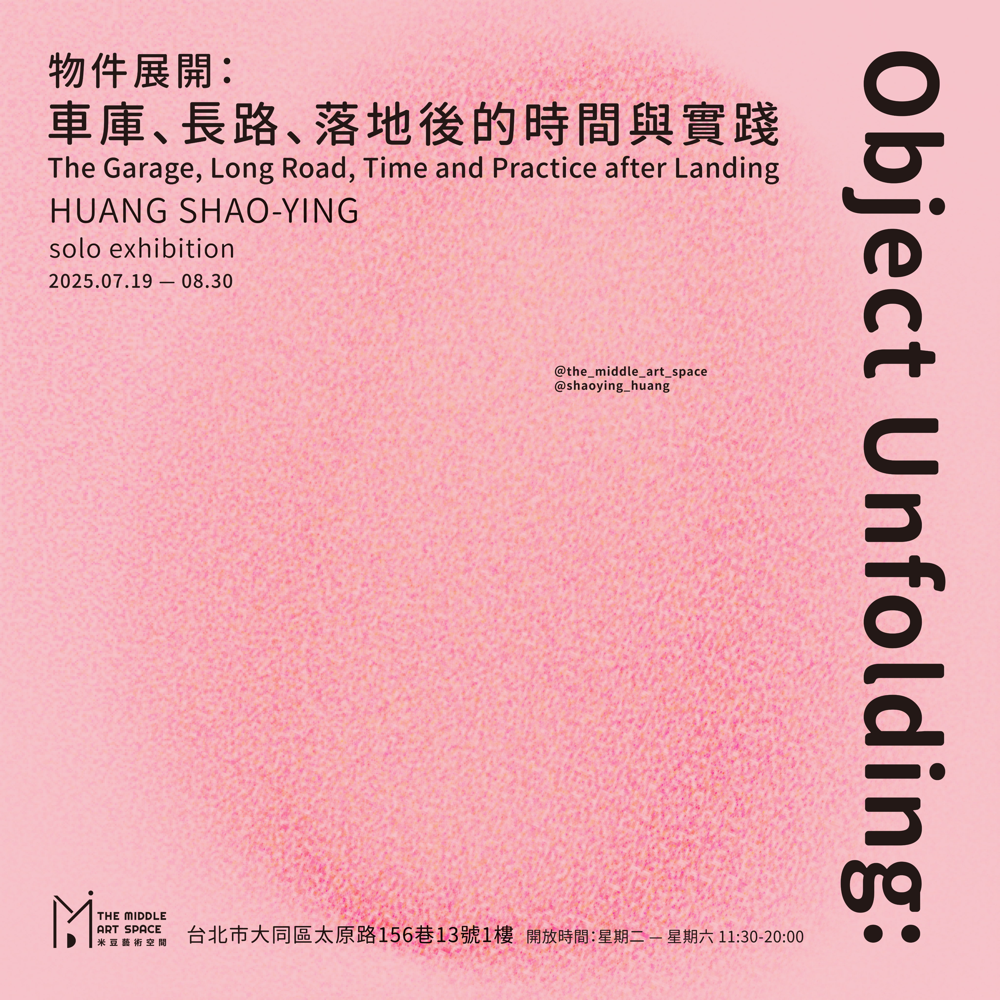
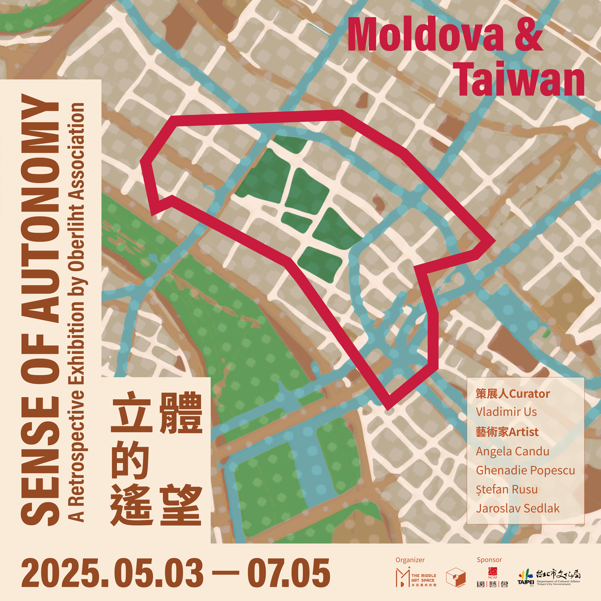

/Exhibitions

那些死過人的樹，都被做成衛生紙：羅硯澤 創作個展The Trees That Witnessed Death, Now Softened Into Tissue Paper: LUO Yan-Ze Solo Exhibition Project Overview: Empathy and Translation at the Border

家裡的蒼蠅：張程鈞個展Flies In The House: Chang Cheng-Chun Solo Exhibition

魏肇儀影像展：島嶼無眠，海底踅神Zhao-Yi WEI Image Exhibition: Sleepless Isle, whispers ride the tide.

物件展開：車庫、長路、落地後的時間與實踐Object Unfolding:HUNG SHAO-YING The Garage, Long Road, Time and Practice after Landing solo exhibition
